Android(?)
One-Day Workshop
+ A bit of Git
What we'll learn
What we'll be trying to build
- A very basic android app
Agenda
Today
- Installation
- Parts of an Android app
- Command line
- Git/GitHub
- LUNCH
- Data types and variables
- Functions and methods
- Creating an android UI
- User interaction in android
Expectations
- It's going to hurt your brain
- Ask questions
- Google is your friend
- We will hit errors
Your Takeaways
Confidence in your ability to troubleshoot and learn on your own

Check that you have
Android Studio
installed
Opening the Terminal
Ubuntu
Ctrl
+Alt
+T
CtrlAltTand hit enter
Mac
CommandSpacebarType in "Terminal"
and hit enterWindows
Windows
+r
WindowsrType in "cmd"
and hit enterCheck that we have java 1.7 (ish)
LINUX (Ubuntu & Mac)
In your terminal:
java -versionWINDOWS
Windows Start > Programs > Java > About Java
Java can also be manually added to PATH to run the `java -version` command.
We're ready!!!

Objectives: Parts of Android
Describe the bits of an Android application.
Apps: The user perspective
Install from Google Play
You get an Icon on your Home Screen
You click it
Play!
Cat Photos
Parts of an app:
DEVELOPER PERSPECTIVE
Layout xml (like HTML)
Java code (like js)
AndroidManifest.xml
build.gradle
Layout xml
Define the UI for your app
Java code
The java does the "work" of the app
AndroidManifest.xml
Think of this file as the "settings" for your application
Code Parts
Activity
Intent
Fragment, Service, BroadcastReceiver, ContentProvider, etc...
Activity == Screen
Intent == Message
Forget all that!
This class is Java
Java is doing the actual work
Java is critical for Android
!
Basic Java exercise?
Fire an arrow
Paying attention?
Identify the 3 basic parts of an Android app and their purpose.
Objectives: the command line and Java
Navigate files and folders using the terminal
Run Java code using the command line
Since we're big time developers
- Leverage the web
- Google, StackOverflow, GitHub
- There is a "right" way to Google
- Be efficient
- Use the keyboard, terminal (command line) as much as humanly possible

The Command Line
Heart of your OS
You can do anything you could do in finder in the command line but faster
"Directory" = "Folder"
Why use the command line?
Want to run a .docx file? Use Microsoft Office
What about an mp3? Open with iTunes
You can code Java without using terminal, but you'll struggle with other tools and concepts.
Big Idea: Functions vs. Parameters
- Just like high school math, functions/commands represent a set of instructions that take input, do calculations on that input, and return a result.
- "Input" = "Parameters"
- Parameters are information or data you give to a function
- Example: f(x) = 2x + 4
- Sometimes, functions don't accept parameters
What happens if we do f(3)?
Let's go back to the terminal
Mac:
Applications > Utilitites > TerminalFor Mac users, lets also open our finder to see how updates made in the terminal affect our file and folder structure
PC: Right click desktop and choose
Git bashTerminal Commands Demo
Remember: Directory = Folder
Do these with me!
Find out the present working directorypwdlscdmkdirTerminal Commands Demo
rmdirtouchrmcpatomMoving Between Folders Demo
Move up one directorycd ..- We can chain folders into the ".." parameter
Move to the parent (root) directory
cd ~Your Turn!
From your desktop:
- Create a directory called "days_of_week"
- Create two more directories within the "days_of_week" directory: "weekend" and "weekdays"
- Within the "weekend" directory, create two files: saturday.html and sunday.html
- Within the "weekdays" directory, create five files: monday.html, tuesday.html, etc
Work with a partner!
BREAK
What is Git?
- Think Microsoft Office in 1999 - but with "version history" from Google Docs
- Code manager or "version control software"
- It's super smart
- The real benefit is when you're working in teams, but let's ignore that for now
Let's try it!
into your days directorycd- Let's track this project!
This adds git to your "days" directorygit init
Adds your files as "ready to be saved" (committed)git add
Commits (saves) files to the git timeline or version historygit commit -m 'INSERT A MESSAGE'
Let's check the logs
Shows your commit historygit log
Key Idea
With Git, nothing is lost (if you do it right!)
Let's check it out:
- If I add a whole bunch of crazy HTML to my Monday.html and add/commit it, I can checkout to my earlier version
- You can imagine how valuable this is to a developer or a dev team
So what the heck is GitHub?
- A service that lets you host Git repositories (fancy word for "projects") on the internet
- Allows for easy sharing of code
- There are public sources of code (Reddit) and private sources of code (predict)
If you haven't already, let's take a second to sign up for GitHub
- To prevent problems, use the same email/username you used for your git configurations
Why is GitHub so special for teams?
- Let's look a few slides visualizing this


For your reference...
Copy this link: https://i.imgur.com/07OiOrs.png
We'll reference it throughout the lesson
Watch me, now.
- I will add some changes to my days of the week files and folders
- Then I'll add/commit those change
- Then I'll create a new project on GitHub
- Then I'll push those changes
- Then you will "fork" my changes, so you have them on GitHub
- Then you create a new folder (why?), and "clone" that GitHub repository
Watch you, now.
git clone YOUR_URL@github.comLet's take a look at a GitHub project
https://github.com/square/retrofit
What information can we find about this project history?
Your turn!
https://github.com/dlew/joda-time-android
- What version are they up to?
- Which user is the second-greatest contributor to this repository?
- How many commits were made on August 12th?
- On the April 12th, 2015 commit:
- How many files were modified?
- How many lines were added?
- How many lines were deleted?
- What are the names of the files that were modified?
LUNCH!

Recap the morning
- What part of an Android app handles the logic?
- Gary is a co-worker working on a side-project and asked me to help - what should Gary do and what should I do to make sure I can edit Gary's code on my computer?
Objectives
- Learn about basics of Java types
- Control the flow of your application based on user input
Lets write some code!
Why Java???
Well, for Android, you need it.
Probably most things you see use it (maybe)
Java

- Created by James Gosling/Sun in the mid-90s
- Was supposed to be "write once, run anywhere"
- Basically for servers
- Android first serious UI usage
- Object oriented

- Some consider it "old" and/or verbose
- Whatever, scoreboard
Some weird Java stuff
(Mostly) Everything is a class/object
Unlike scripting languages, you can't just "run" a file
Java compilation
Java code is just text
"Compiled" into maching readable code
All languages technically do this at some point

Don't worry about public class App
Or public static void main
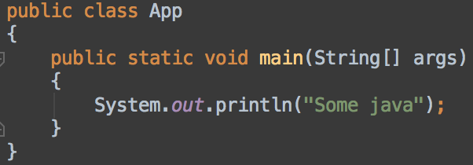Open Java
Clone git url: https://github.com/kpgalligan/gagradle
In your terminal:
clone git@github.com:kpgalligan/gagradle.git
cd gagradle
Run Java in the Termianl
javac App
java App
Data Types
Java is primitives and objects
Primitives are basic data types
Objects are data collections (basically)
An object is a software bundle of related state and behavior. Software objects are often used to model the real-world objects that you find in everyday life.
Practice the next few slides with me!
All programming has something like...
Numbers
Strings
Boolean
Collections
Data Types: Numbers
Integers
1, 5, 245, -42, 24142341351324
byte, short, int, long
Floats
1.1, 2.000043, -0.5522001
float, double
Data Types: Strings
- any kind of text
- donated by double quotes
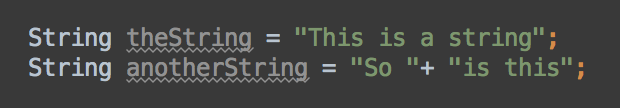
Data Types: Boolean
Yes/No value
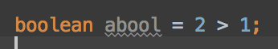
Variables
Variables are simply a place to store data. The type of data is declared before the variable name (Java has stong typing). Variable names, by convention, start lower case, with capitals for new words (Camel case):
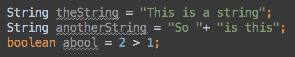
Concatenating Variables
You can join strings!
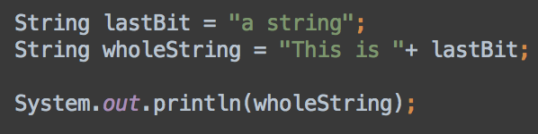
> This is a string
Discuss: Could you think of any use cases for this?
System.out.println()
Writes string out to terminal:
(Yes, Java can be verbose)
User Input
Read lines from terminal
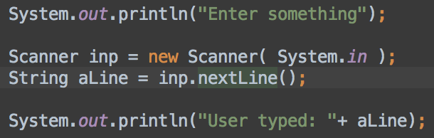Yeah, weird. Just do it.
Let's get down and write some code.
Code along! Strings & Integers

Methods (or functions)
- Let's think back to math, as before:
f(x) = x + 2
Does this function produce anything if you repeat the "instructions"?
Method is a list of instructions

Writing Methods
In Java, you would write f(x) = x + 2 like:
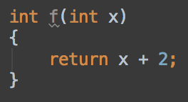
All methods have
- A return type
- A name
- (optional) Parameters
- The code body
Access level (and other things)
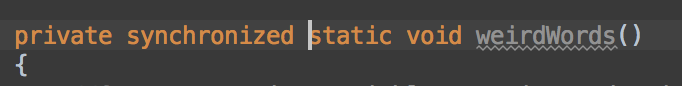
You'll see some other words floating around. Visibility is only important once you get into classes
And if you see synchronized, you're probably in the wrong place
Note, all methods are part of a class (but don't worry about that yet)
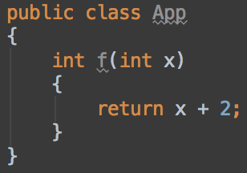
Calling Methods
Use the name, pass params, profit.
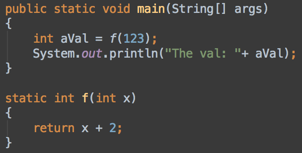Don't get freaked out by 'static'. Just use it for now
Let's practice together!
Methods code along
Running Java on the command line is a little complex to understand...
But easy to do with the test project
In Terminal, run 'javac App'
In Terminal, run 'java App'
You try it!
Refactor the code along code to ask the user for two numbers, and print out the product of those numbers
Fork, clone, and work: https://github.com/kpgalligan/ga_ex2_stringsandnumbers
Hint: turn a String into an int with:
Integer.parseInt(aString)
Objectives
use Booleans and conditionals to control the flow of your application
Booleans
Either true or false; these give us the ability to use logic => to choose where and what we want to happen in our application.
true || falseTo get boolean values, we operate!
read: "user operators; compare"

Some examples
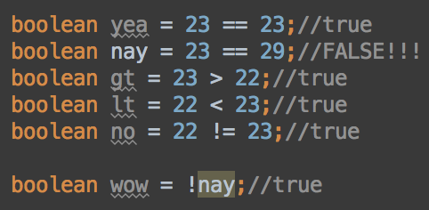That brings us to conditionals: the 'if' statement
The syntax reads
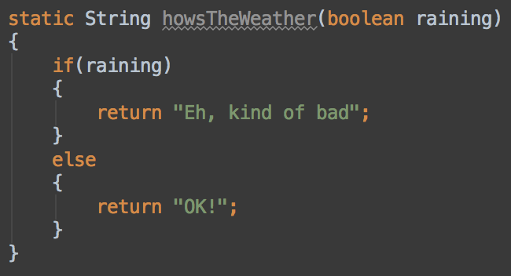Conditional 'if' statements
The 'else if'
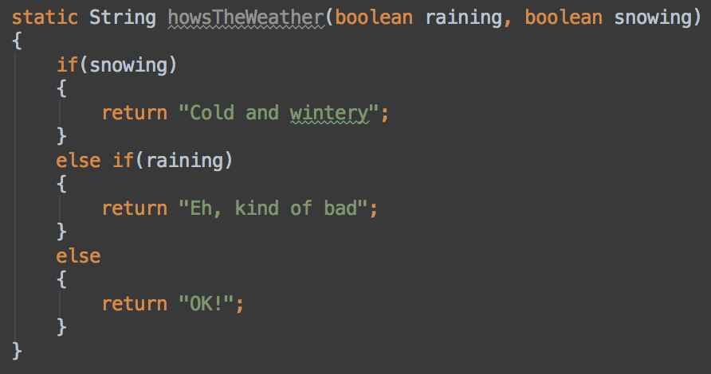Strings (and objects) are weird
OK!
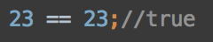
OK?
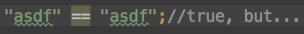
Nope!
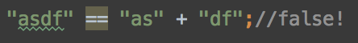
Use 'equals()'
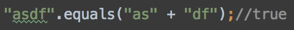
Watch meh!
I'm going to build a function that asks a user where they live and then tells them whether or not they are cool.
You try it!
Go get https://github.com/kpgalligan/ga_ex4_beer
Conclusion
Basic Android bits
Command line
Git
Basic Java and types
Boolean logic
Methods
Welcome back!
Android has 3 major parts
Let's get our brains going!
(Kevin, https://github.com/kpgalligan/ga_ex6_names)
Check tlk.io for the kickoff assignment.

Part 1: Together - clone, fork https://github.com/kpgalligan/ga_ex6_names
Part 2: In Pairs - https://gist.github.com/kpgalligan/1ed0157e53fd0d28d49b
Bonus: Push your code to GitHub!
Multiple Conditions
This allows you to create an if statement that could be satisfied by multiple conditions
and
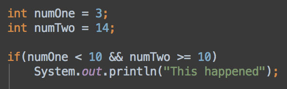or
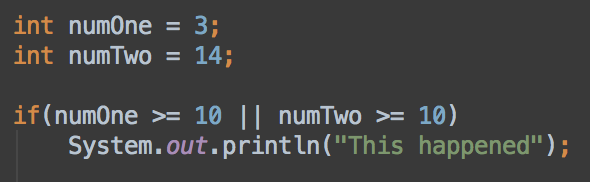Let's try it!!
Fork it, clone it, solve it!
https://github.com/kpgalligan/ga_ex7_adminexample
Loops: Continue doing stuff...over and over...
For
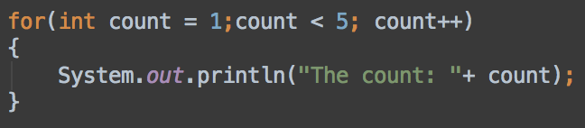While (if you're curious)
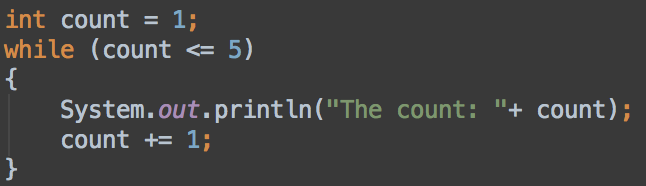Loops
Watch me!!
Now yew!
Fork it, clone it, solve it: https://github.com/kpgalligan/ga_ex8_secretnumber

Data Collections
Simply put, data collections are a collection of data!
Collections can include all types of data
Java is going to make this a little weird, so WAKE UP!

Objects
Can have a bunch of variables and methods

Primitives
Just simple data (low level stuff)
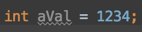But can also be an object
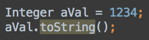
Arrays and Lists
Java has an array type, which is a basic collection of values
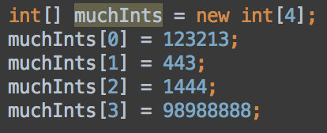But you need to know how many up front, and not many methods (ew)
Lists!
Are more flexible. Can just add, call methods, but...
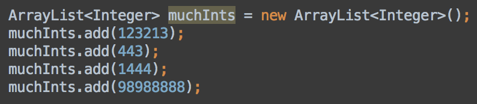
The can only hold objects. No primitives. Yet, autoboxing...

Confusing
Just assume you'll understand it after you learn about objects
ArrayList can do things
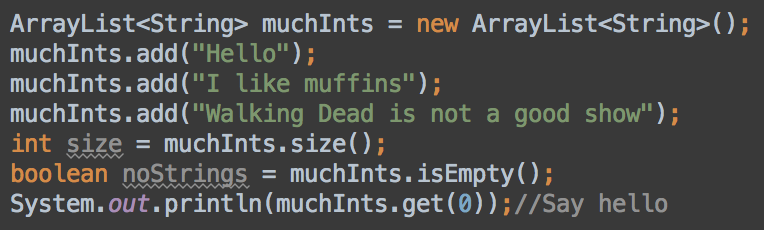NOTE: Indexes start at 0!
More stuff we can do with a list
Code along with me:
- add our names to a list (variable) called classNames
- add "Rob" to the front of the list
- add "Jim" to the back of the list
- remove them both
Why are collections awesome?
We can "iterate" over them!
read: "we can do Something to each element in a collections of data"
- Let's take our class list and print each element in it
Collections: Maps
- A Map is like a dictionary, a set of "keys" and corresponding "values"
- For every key, there is a corresponding definition
- Can be String, but can be other objects (on either side)
- Maps are objects, with methods to manipulate them
- Let's create a map and access elements together
Collections: Hashes
We got sweet methods on hashes too!
stringMap.keySet()stringMap.values()stringMap.size()Let's practice adding new values and retrieving values from a Map
Retrieving values from a hash
stringMap.get("name")stringMap.get("address")Iterating
More Iterating
Cities
Clone code: https://github.com/kpgalligan/ga_ex9_collect
Read the big data file of cities
Store all the cities by state
State is the key in a Map. Cities for each in a List
Hints
Values in file are comma separated
Use "split" string method to separate parts
Use "trim" string method, because spaces are messy
Talking to the world
Similar to browsers
Use a network library to make server calls
The internet as you know it
It all comes down to requests and responses
You send information out to the web, and based on the info you send, you get information back

HTTP
Stands for "Hyper Text Transfer Protocol"
Allows for communication between a variety of hosts and clients, and supports a mixture of network configurations.
Read: "Makes it easy for computers to talk to each other"
Important Vocab
Host - Client - Request - Response
Predict, with a partner, how these vocabulary words relate to one another. When you're finished, we'll draw a diagram on the board that we will refer back to.
Important Vocab
Host - a computer or other device connected to a computer network. A host may offer information resources, services, and applications (via computer code!) to users or other computers on the network
Examples: Servers and Web Services
Hosts - Servers

Web Services
Let's login to the AWS Console, Heroku
Important Vocab
Client - the requesting program in the client/host relationship
The client initiates an HTTP request message, which is serviced through a HTTP response message in return.
Come up with one example of a client that can send requests.
Clients
Terminals

Clients
Web Browsers

Clients
Mobile Apps
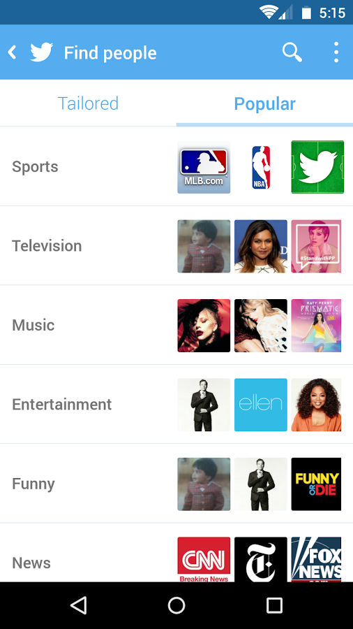Try the Terminal as a request client
Open your terminal, and copy in the following request:
curl "http://api.openweathermap.org/data/2.5/weather?q=new+york,us&APPID=ee24dd3e8a995617fbb51fdd7b160e2c"
cURL stands for 'Client URL Request Library'
Browsers get HTML
Format for display
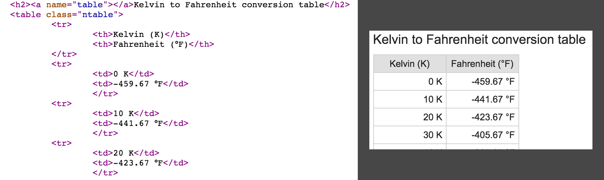Apps get Data
(Often JSON)
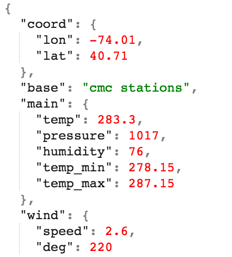Try the Androids
https://github.com/kpgalligan/ga_androidServer side
Communication through urls from client
Path and params point at things
GET
Gets data from the server
POST (or PUT)
Generally modifies data on server
Clients talk to server and db
The internet!

Study resources
Big reference
https://docs.oracle.com/javase/tutorial/
Practice examples
http://codingbat.com/java